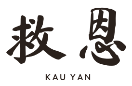
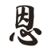

01 · Tin sign
紅招牌
橫向紅漆招牌，厚漆字加一條銅線，似街市同鐵皮招牌。網站頁首用單色松綠字就得；紅招牌留俾首屏同名片。
四個方向都圍繞「救恩辦館／救恩」，英文 KAU YAN STORE 只係副標。字都係 SVG 路徑。每個都有 16px 細圖同單色版本。顏色如果走出紙、松、銅，下面寫明點樣放回網站。
01 · Tin sign
橫向紅漆招牌，厚漆字加一條銅線，似街市同鐵皮招牌。網站頁首用單色松綠字就得；紅招牌留俾首屏同名片。
02 · Neon
救恩做成霓虹。深色有光暈，淺色係平面紅字，另外有一版松綠單色可以直接放頁首。光暈只出現喺深色區，例如頁尾。
03 · Brush
毛筆救恩，兩個字各自微傾，有少少人手不完美。墨色已經貼近而家網站嘅紙同松，頁首可以直接用。



04 · Sign + emblem
楷書救恩旁邊一盞手繪圓燈籠，係街招同一個細符號。燈籠可以係招牌紅；單色版全部改松綠，favicon 用燈籠或者恩字。
霓虹 · 夜街示意